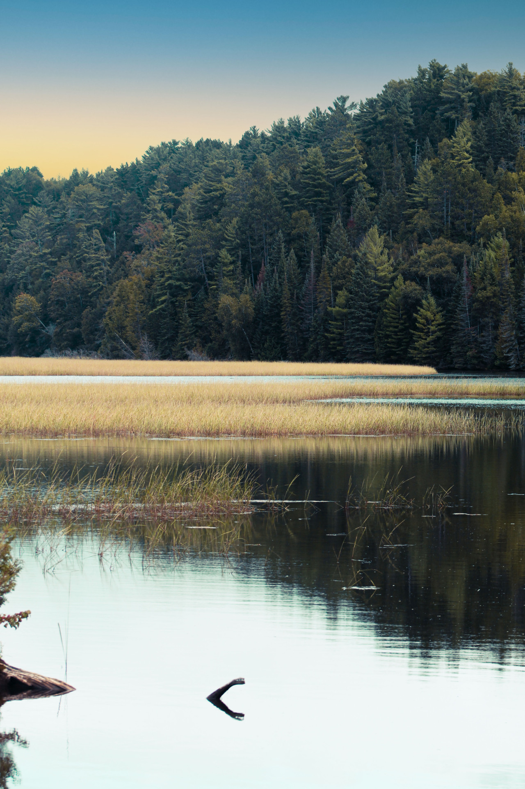

Landscapes
There's something about photographing nature and landscapes that captures the feeling when I was present at the location. It's an indescribable feeling, but it is a feeling that can be felt by looking at a photograph. Looking at these pictures, I reminisce the feelings and experience I had at those particular instances, and I hope it makes you feel like you were there with me, too. This gallery incudes pictures from places I've lived in, visited recently, and photographs I may or may not be emotionally attached to.
